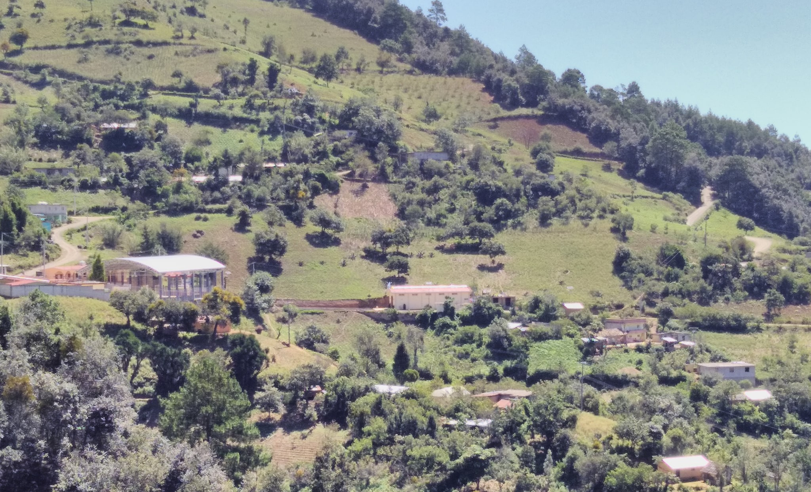
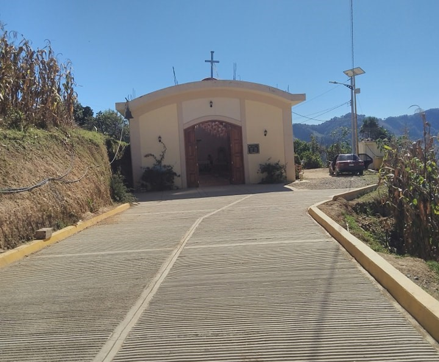
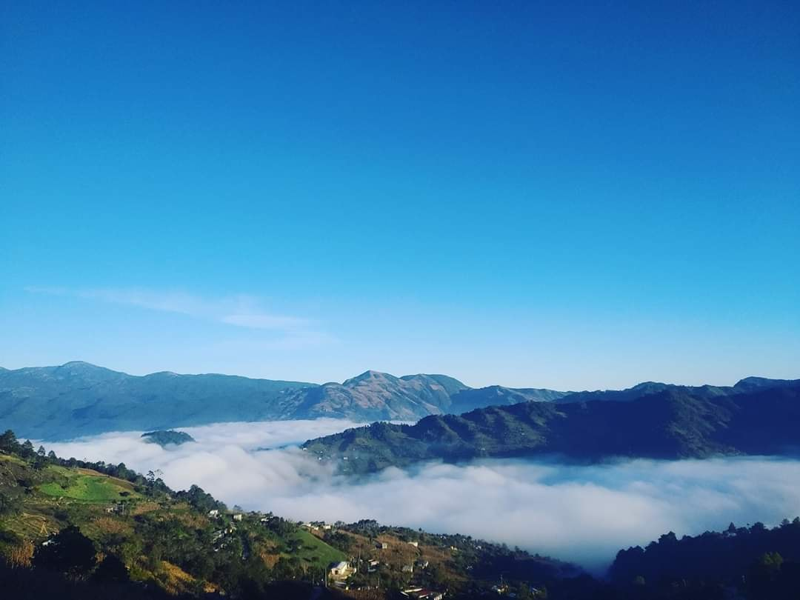
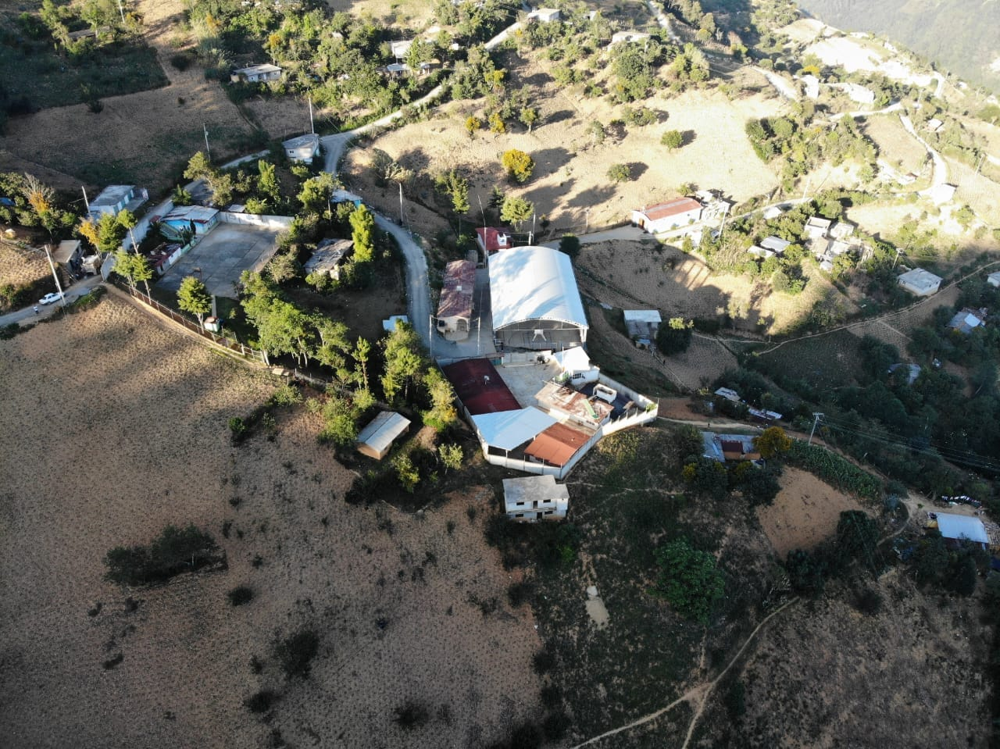
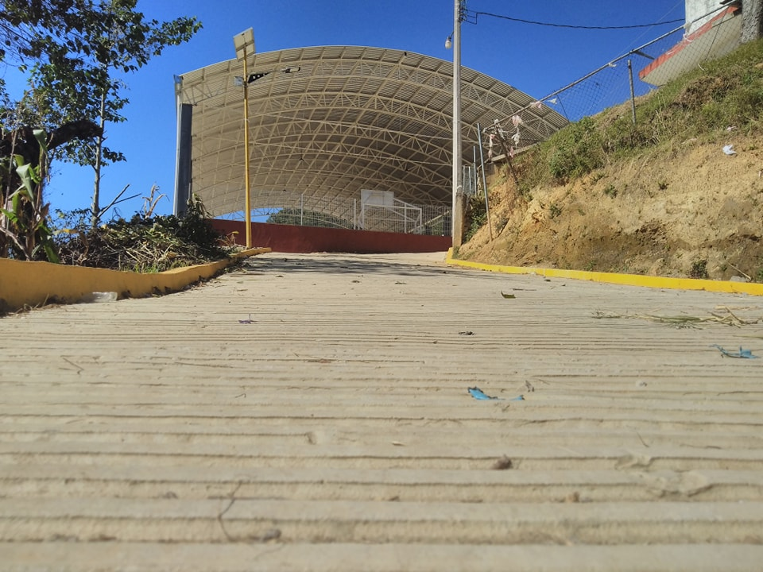
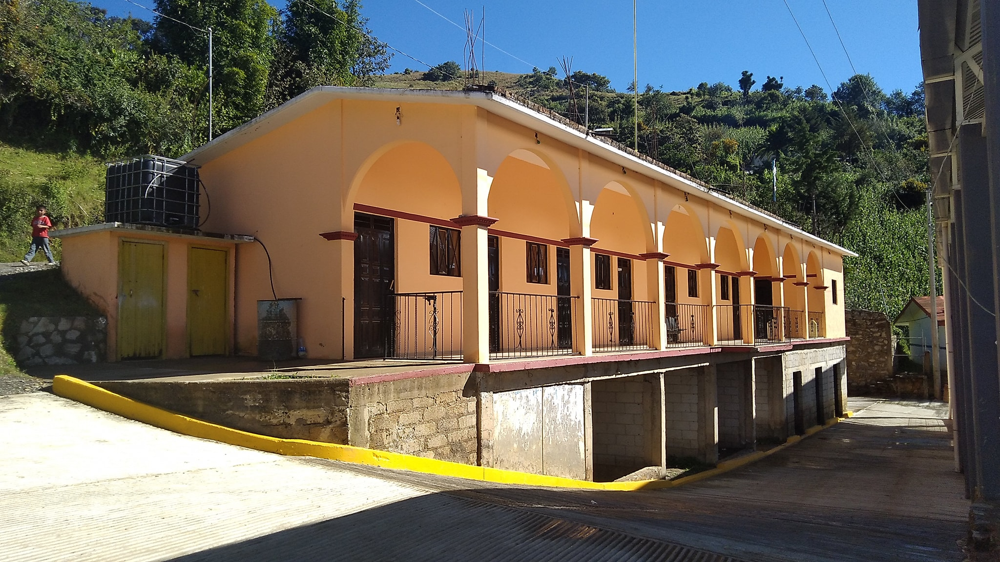
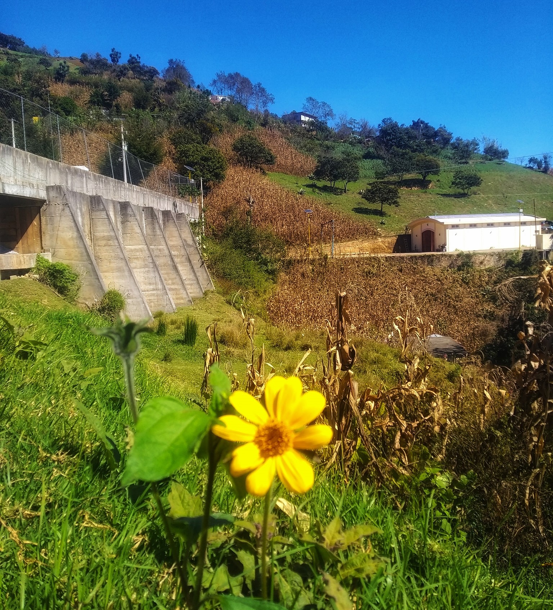
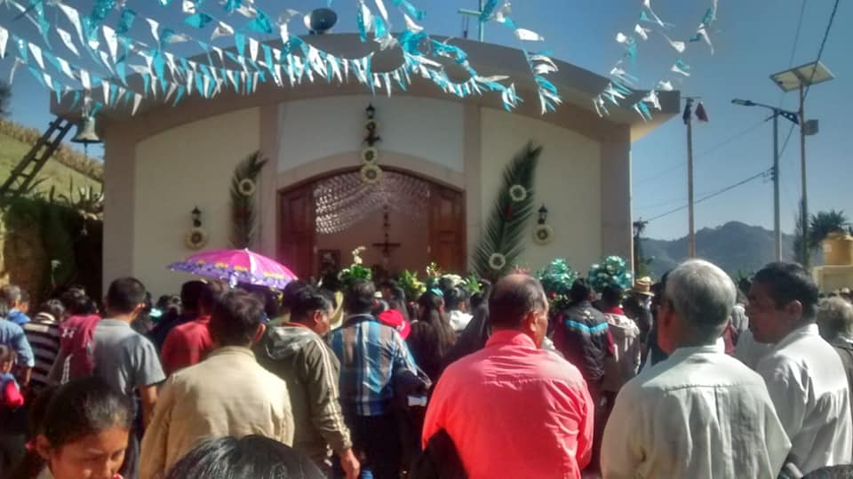
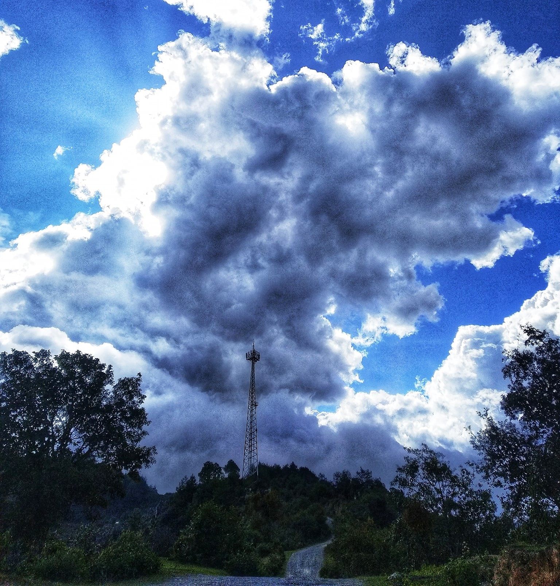
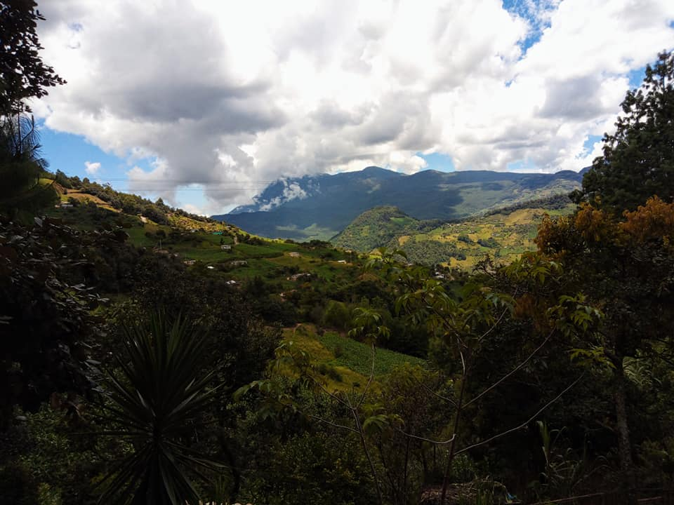

Conoce su Historia

1Historia
El nombre "Ahuatepec" tiene su origen en el idioma náhuatl, que era hablado por los antiguos habitantes de la región. Está compuesto por dos elementos principales: "ahuatl", que significa "ave" o "aguacate", y "tepec", que se traduce como "cerro" o "lugar".
Por lo tanto, el significado general del nombre se interpreta como "cerro del ave" o "lugar de los aguacates".
En el caso de "Ahuatepec", su significado puede estar relacionado con la presencia de aves o árboles de aguacate en el área, o puede tener un significado simbólico o mitológico específico dentro de la cosmovisión náhuatl.
Galeria







Atractivos Turisticos:

Disfruta y celebra su colorida Fiesta Patronal de Ahuatepec asi como su tradicion, musica y cultural local.

En esta vista panorámica, podrás deleitarte con la impresionante vista de los paisajes montañosos y la neblina que envuelve el entorno, creando una experiencia mágica e inolvidable.
